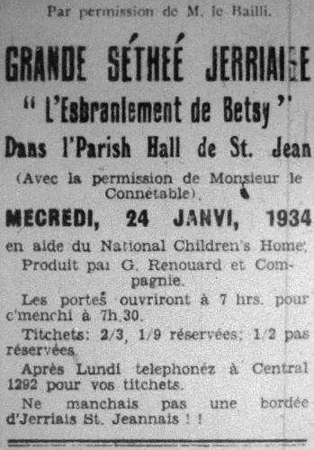

Le 24 Janvi, dans la Salle de Paraisse est St. Jeannais le célèbre G. Renouard et sa compangnie, en presence de chents d'personnes, lus raconti l'enbarras que sa pouore femme, Betté Rondé, avait avec lus fille 'Ster Rondé, pour lis trouvé eunne homme. Betté Rondé (q'est Mrs. Ellis) éthait voulu Mathieu Deslandes, eun banchi (qui tet Mr. C. De La Haye) ou ben Captain Perchard (qui tet Mr. E. Perchard) pour mathié sa fille, 'Ster Rondé (qui tet Miss E. Le Marquand). Mais Frankie Rondé (qui tet M. Egré) fût dire à san père, Pierre Rondé (qui tet G. Renouard) qui avait veu la 'Ster Rondé (sa soeur) dans la cache avec eun soudard, qui la tienné par la taille et qui tat à l'embrachi. Eliza Vautchi (Mrs. Blampied) et Jenneton de Louche, deux vaisinnes, dis à Betté Rondé q'ou tet à faite eunne bétte de y'i'même, car 'Ster, sa fille, ne pouvait pas paslé l'anglais pour mathié un offici. Ph'lip Le Huquet (qui tet Ed. Le Cornu), un fils d'fermi, éthait ben voulu mathié la 'Ster Rondé; mais Merrienne L'Escaudey (Miss Le Cornu), la nièche à Pierre Rondé, convin le bouanhomme Pierre à lus donné eunne bordée d'nier beurre; et savon ben ch'la qui s'arivi? Tomas L'Riche (Mr. de Caux) prins le quaire et lus vielle berrisse et fût porté a 'Ster Rondé et Nick Le Tempyie (Bill Blampied), qui tet le vachi, en ville pour cherchi des èspices pour mettre dans le nier beurre. Et tanchi qui tés en ville le 'Ster Rondé fût se mathié aut d'gistre avec Nick Le Tempyie, le vachi. La Pouorre Betté Rondé s'vonnie dans sa grand-chaisse quand ou les vit ervennait.
Dans les intervals Merrienne L'Caudey chante "J'me pyiés ben mus en Jerri," et Eliza Vautchi lus raconte "La manière de ouchi une homme," et Pierre Rondé ne veu pas se marthié et chante "Le Roi des Pipettes." Toumas L'Riche chante cheque qui fût saisie dans l'pulet, et Jenneton de Louche lus raconte "Les nièches de Laïesse," Frainque Rondé jous de l'accordéon et du violon, et la 'Ster Rondé et Mathieu Deslandes joue le piano.
Et d'vant chanté L'Hymne National en Jerriais le Député Gartrelle fellicite tous les siens q'avait prins tant d'embarras à gardé la vielle langue Jerriaise à haut, et à Mr. J.B. Le Quesne pour avait organisé une çi bouanne concert en aide du National Children's Home, et pour fini y lus dis: "Jerriais, ne manchais pas une bordée comme chonchin pour vos faire rire."
Evening Post
1934
Viyiz étout: